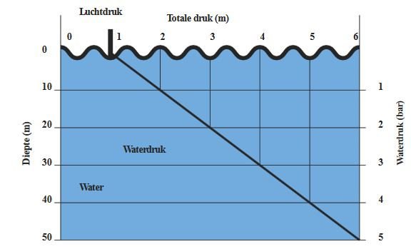
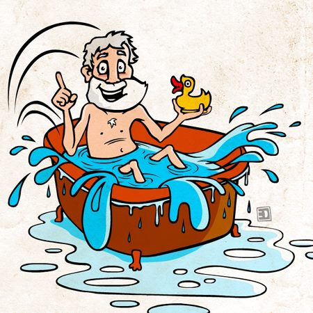

Wet van Archimedes
Maarten Schroeven
Over mij
- Maarten Schroeven
- 1*I
- Duiker sinds 2009 bij Poseidon
- Webdeveloper
- maarten@sonaryr.be
Over deze presentatie
 https://sonaryr.github.io/duiktheorie
GIT repository
https://sonaryr.github.io/duiktheorie
GIT repository
Open Source
Enkele afspraken
 GSM's uit of stil
GSM's uit of stil
Vragen? Stel ze!
Voorkennis
Korte herhaling
Begrippen
- Massa ($kg$)
- Kracht ($N$)
- Gewicht ($1kg \Rightarrow 9,81N \approx 10N)$
- Druk ($Pa$)
Wet van Pascal
Een druk, uitgeoefend op een deel van een vloeistof, plant zich in alle richtingen voort met dezelfde grootte.
Tijd voor een verhaaltje!
Wet van Archimedes
Een lichaam ondergedompeld in een vloeistof, ondergaat een opwaartse stuwkracht gelijk aan het gewicht van de verplaatste vloeistof.
Tijd voor een proef!
Opwaartse stuwkracht
- Onafhankelijk van diepte
- Afhankelijk van volume
- Afhankelijk van dichtheid van vloeistof
Opwaartse stuwkracht
Een ondergedompeld lichaam behoudt zijn gewicht
⇒ 2 tegengestelde krachten
opwaartse stuwkracht & gewicht (aantrekking tot aarde)
Opwaartse stuwkracht
opwaartse stuwkracht < gewicht blok
De blok zal zinken/zweven/stijgen
Opwaartse stuwkracht
opwaartse stuwkracht = gewicht blok
De blok zal zinken/zweven/stijgen
Opwaartse stuwkracht
opwaartse stuwkracht > gewicht blok
De blok zal zinken/zweven/stijgen
Opwaartse stuwkracht
drijven
opwaartse stuwkracht ondergedompeld deel
=
gewicht blok
voorbeeld: boot
Opwaartse stuwkracht
- Onafhankelijk van diepte
- Afhankelijk van volume
- Afhankelijk van dichtheid van vloeistof
Tijd voor (nog) een proefje!
Dichtheid
Gelijke volumes van verschillende stoffen hebben een verschillend gewicht en dus ook een verschillende massa.
Dichtheid
Voor duikers zijn de belangrijkste:
- Zuiver zoet water: $1000\frac{kg}{m^{3}} = 1,000\frac{kg}{dm^{3}} = 1,000\frac{kg}{l}$
- Zout water: $1025\frac{kg}{m^{3}} = 1,025\frac{kg}{dm^{3}} = 1,025\frac{kg}{l}$
Toepassingen in de duiksport
- Uittrimmen
- uitloden
- Hefballon
- Vlotters aan een buddyline
Oefeningen op de wet van Archimedes
- Wat zal er gebeuren als je 1kg lood in zuiver zoet water legt?
-
Dit zal afhangen van het volume
- Een loodblok zal zinken
- Een bootvorm zal drijven door meer verplaatst volume
Oefeningen op de wet van Archimedes
- Een duiker met zijn duikuitrusting 'weegt' 95kg, om perfect uitgetrimd te zijn in zoet water heeft hij 5kg lood nodig. Hoeveel lood heeft hij nodig in zout water?
Zoet water
zweven: $gewicht_{duiker} = gewicht_{water}$
Zout water
zweven: $gewicht_{duiker} = gewicht_{water}$
⇒ deze duiker (95kg) heeft 7,5kg lood nodig in zout water
Oefeningen op de wet van Archimedes
Een blok hout drijft aan de oppervlakte en is voor de helft onder water en verplaatst 10l zoet water. Hoeveel lood zal ik hier aan moeten bevestigen om deze blok onder water te krijgen?
Voor deze oefening gaan we er van uit dat het extra lood geen water verplaatst
drijven: gewicht van de blok = gewicht verplaatst water ondergedompeld deel
blok helemaal ondergedompeld
Er zal 20l water verplaatst worden
zinken: gewicht van de blok + lood > gewicht verplaatst water
Doordenkertje
Op een boot in Vodelee ligt een grote loodblok, wat zal er gebeuren met de waterstand als we deze loodblok in het water laten vallen?
Samenvatting
-
Wet van Archimedes
- Zinken/Zweven/Stijgen/Drijven
- Opwaartse stuwkracht
- Dichtheid